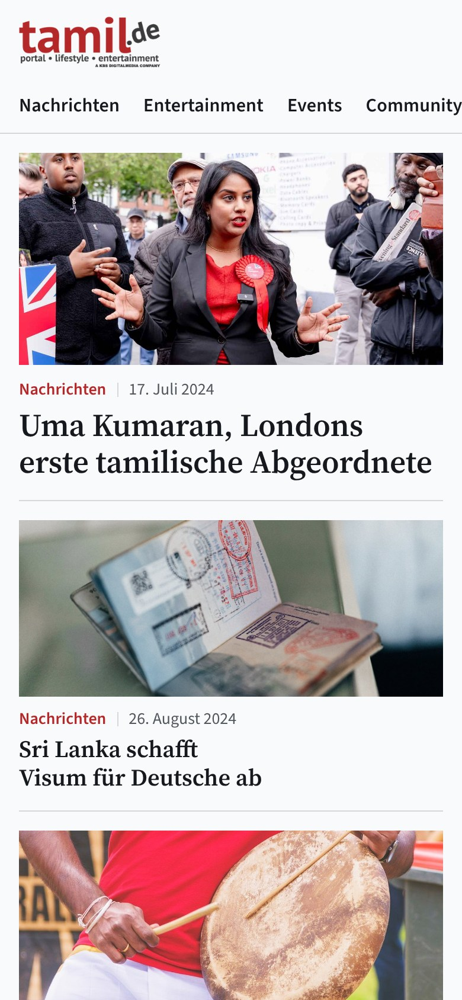
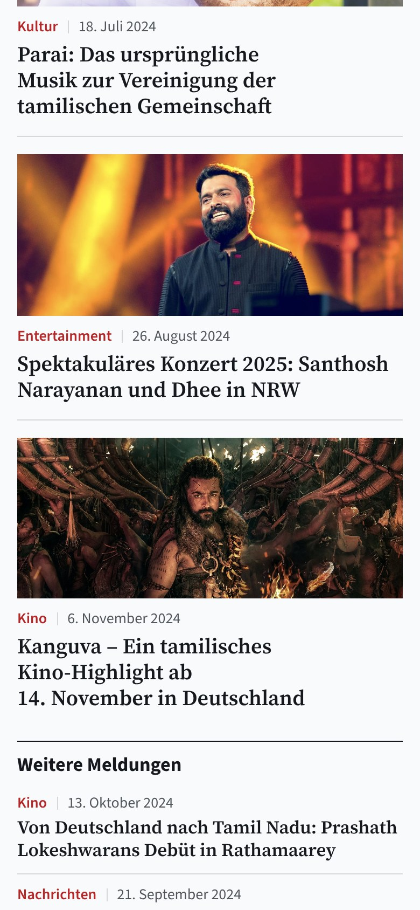
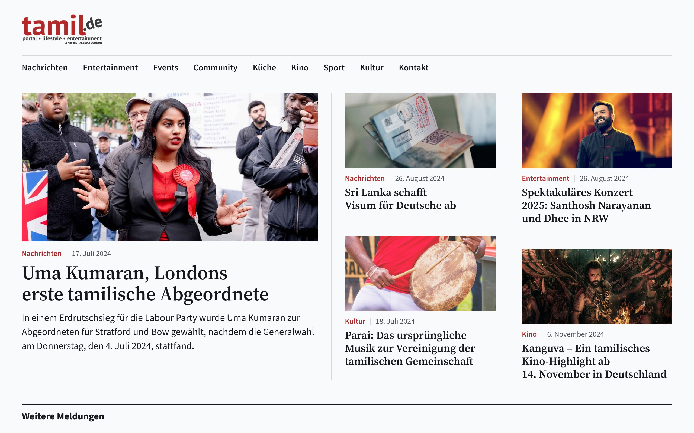
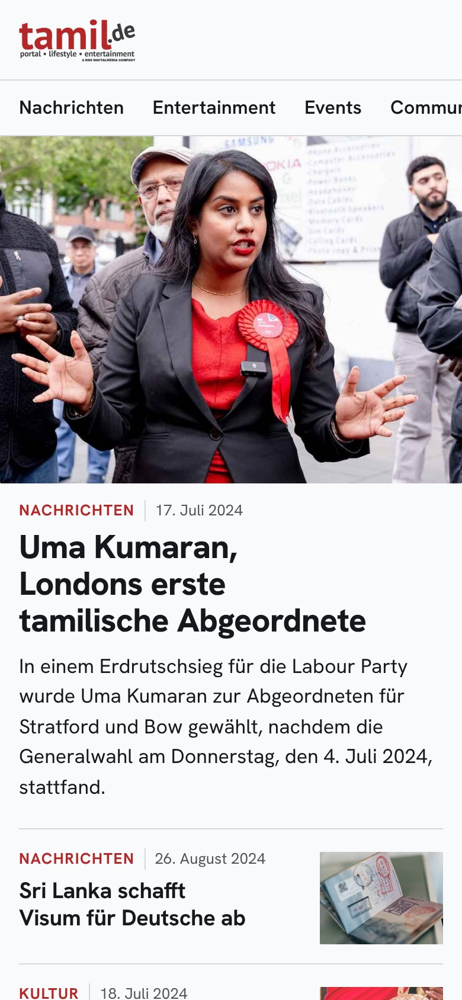
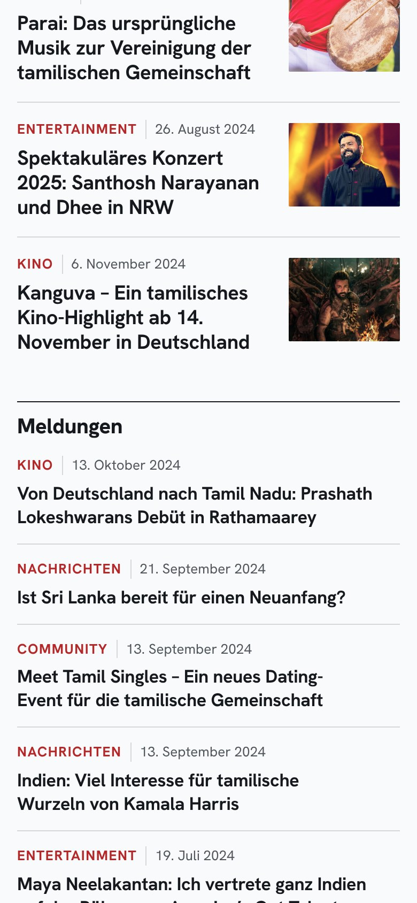
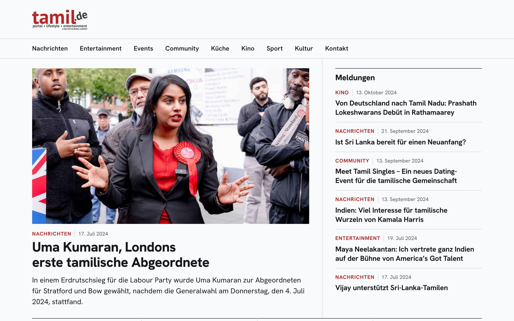

Interne Vorschau · noch ohne unabhängige Prüfung · nicht für den Auftraggeber
Drei Proben: tamil.de wie eine große Nachrichtenmarke
Ruhig statt laut, Rot nur als kleiner Akzent, normale Schrift, viele Geschichten auf einen Blick. Alle drei zeigen dieselben echten Beiträge und nur die Startseite. Gesucht ist die eine Probe, die weiter ausgearbeitet wird, oder eine Mischung, zum Beispiel die Schrift der einen mit dem Aufmacher der anderen.
Probe Klar
Nüchtern und kompakt.
Schlagzeilen in einer klaren Grotesk, das Bild neben dem Text, viele Meldungen auf einen Blick. Familie der Vorbilder: Tagesschau und BBC.


Gemessen: alle Vorgaben erfüllt
| Messwert | Probe (Handy / Desktop) | Ergebnis | Vorgabe | Echte Marken | Abgelehnte Skizzen |
|---|---|---|---|---|---|
| Schlagzeilen im ersten Bildschirm | 3 / 9 | erfüllt | Handy mind. 2, Desktop mind. 4 | 1–3 / 0–4 | 1–2 / 0–2 |
| Größte Schrift | 28 / 34 | erfüllt | höchstens 32 / 38 px | 18–32 / 18–36 px | 98–129 / 183–335 |
| Rot in der Fläche (ohne Bilder) | 0,2 / 0,2 | erfüllt | höchstens 3 % | meist unter 8 % Farbe | 6,0–50,0 / 18,1–54,5 |
| Größte rote Schrift | 13 / 13 | erfüllt | höchstens 20 px | – | 56–129 / 131–335 |
| Kopf mit Logo und Rubriken | 112 / 90 | erfüllt | am Handy höchstens 120 px | – | 93 / 74 |
| Größte Rundung | 0 / 0 | erfüllt | höchstens 2 px | 0–1,5 px | 0 / 0 |
| Schatten, Drehungen, verstellte Schriftbreite | 0 / 0 | erfüllt | keine | keine | 7–52 / 7–56 |
Probe Blatt
Wie ein Qualitätsblatt.
Schlagzeilen in einer Serife, alles andere serifenlos, mehr Luft und feine Linien. Familie der Vorbilder: Zeit, Guardian und NZZ.





Gemessen: alle Vorgaben erfüllt
| Messwert | Probe (Handy / Desktop) | Ergebnis | Vorgabe | Echte Marken | Abgelehnte Skizzen |
|---|---|---|---|---|---|
| Schlagzeilen im ersten Bildschirm | 2 / 5 | erfüllt | Handy mind. 2, Desktop mind. 4 | 1–3 / 0–4 | 1–2 / 0–2 |
| Größte Schrift | 27 / 36 | erfüllt | höchstens 32 / 38 px | 18–32 / 18–36 px | 98–129 / 183–335 |
| Rot in der Fläche (ohne Bilder) | 0,1 / 0,1 | erfüllt | höchstens 3 % | meist unter 8 % Farbe | 6,0–50,0 / 18,1–54,5 |
| Größte rote Schrift | 14 / 14 | erfüllt | höchstens 20 px | – | 56–129 / 131–335 |
| Kopf mit Logo und Rubriken | 113 / 148 | erfüllt | am Handy höchstens 120 px | – | 93 / 74 |
| Größte Rundung | 0 / 0 | erfüllt | höchstens 2 px | 0–1,5 px | 0 / 0 |
| Schatten, Drehungen, verstellte Schriftbreite | 0 / 0 | erfüllt | keine | keine | 7–52 / 7–56 |
Probe Bild
Das Foto führt.
Großes Aufmacherbild, kräftige Schlagzeile darunter, dann ein dichter Block mit weiteren Geschichten. Familie der Vorbilder: Spiegel.





Gemessen: alle Vorgaben erfüllt
| Messwert | Probe (Handy / Desktop) | Ergebnis | Vorgabe | Echte Marken | Abgelehnte Skizzen |
|---|---|---|---|---|---|
| Schlagzeilen im ersten Bildschirm | 2 / 7 | erfüllt | Handy mind. 2, Desktop mind. 4 | 1–3 / 0–4 | 1–2 / 0–2 |
| Größte Schrift | 28 / 34 | erfüllt | höchstens 32 / 38 px | 18–32 / 18–36 px | 98–129 / 183–335 |
| Rot in der Fläche (ohne Bilder) | 0,3 / 0,2 | erfüllt | höchstens 3 % | meist unter 8 % Farbe | 6,0–50,0 / 18,1–54,5 |
| Größte rote Schrift | 13 / 13 | erfüllt | höchstens 20 px | – | 56–129 / 131–335 |
| Kopf mit Logo und Rubriken | 115 / 146 | erfüllt | am Handy höchstens 120 px | – | 93 / 74 |
| Größte Rundung | 1 / 1 | erfüllt | höchstens 2 px | 0–1,5 px | 0 / 0 |
| Schatten, Drehungen, verstellte Schriftbreite | 0 / 0 | erfüllt | keine | keine | 7–52 / 7–56 |
Zum Vergleich
So sah es vorher aus.
Links der Stand, der als „altbacken“ durchfiel. Daneben zwei der Skizzen von heute, die als zu rot, zu laut und wie aus dem Baukasten durchfielen. Die neuen Proben sollen von beidem deutlich Abstand halten.


Die Bilder zeigen den Stand vom 9. November 2026. Die Beiträge stammen aus dem Archiv der Seite, das im November 2024 endet; die Kino- und Termineinträge aus dem News-Radar. Die Bilder der Nachrichtenseiten dienen nur dem internen Vergleich. Die klickbaren Proben öffnen sich im selben Fenster; zurück geht es mit der Zurück-Taste.